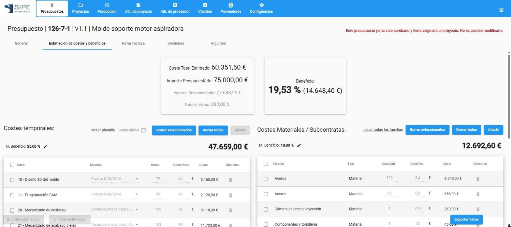

Estimar costes con detalle
La estimación detallada desglosa el molde en tareas, máquinas, materiales y subcontratas. Es la base para dar un precio fiable y para comparar después lo previsto con lo real.

Costes temporales: horas por tarea
- Abre el presupuesto y entra en la pestaña Estimación de costes y beneficios.
- En Costes temporales pulsa Incluir plantilla para cargar de golpe las tareas habituales (por ejemplo, «Mano de obra - molde nuevo»), o Añadir para añadirlas una a una.
- En cada línea elige la Maquina y escribe las Horas. El Coste/hora se rellena con el de la tarea y la máquina, y puedes cambiarlo.
- Revisa el M. Beneficio (margen de las horas) con el lápiz que hay a su lado.
NotaSi no quieres desglosar, marca Coste global e indica solo las horas totales y el coste por hora.
Materiales y subcontratas
- En Costes Materiales / Subcontratas pulsa Incluir todas las familias o Añadir.
- En cada línea indica la familia o material, la Cantidad y el Coste/ud.. Por ejemplo: acero 1.2738, 620 kg a 5,40 €/kg.
- Revisa el M. Beneficio de materiales.
Resultado y guardado
Arriba se ven el Coste Total Estimado, el Importe Presupuestado, el Importe Recomendado, el total de horas y el Beneficio. Cuando esté a tu gusto pulsa Guardar estimación.
- Borrar seleccionados y Borrar todas eliminan líneas.
- Eliminar estimación borra la estimación completa.
- Exportar listas saca la estimación a PDF o Excel.
ConsejoCrea plantillas con los trabajos típicos de tu taller (molde nuevo, reparación, molde con cámara caliente…) en Configuración › Plantillas de estimación. Ahorran tiempo y hacen los presupuestos más homogéneos.
Cómo se calcula el coste por hora
Cada tarea tiene un coste por hora de operario y cada máquina su coste por hora y su tipo de cálculo:
| Tipo de cálculo | Coste por hora de la línea |
|---|---|
| Combinado | Operario + máquina. Por ejemplo, mecanizado 5 ejes: 28 €/h + 55 €/h = 83 €/h. |
| Solo máquina | Solo el coste de la máquina. |
| Solo operario | Solo el coste del operario. Por ejemplo, banco de ajuste. |